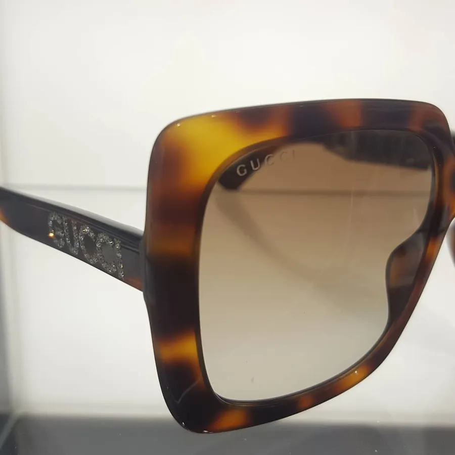
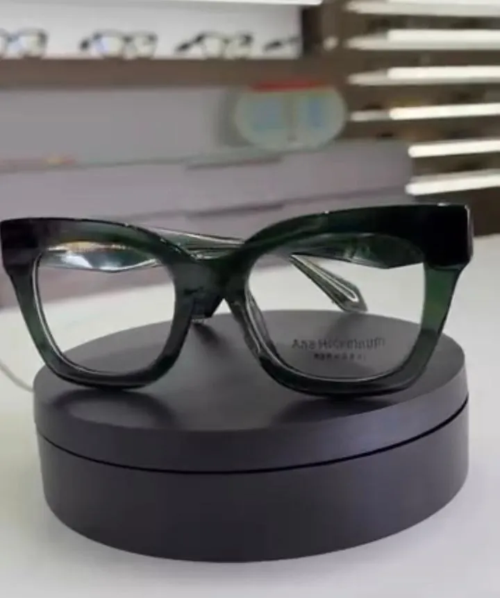
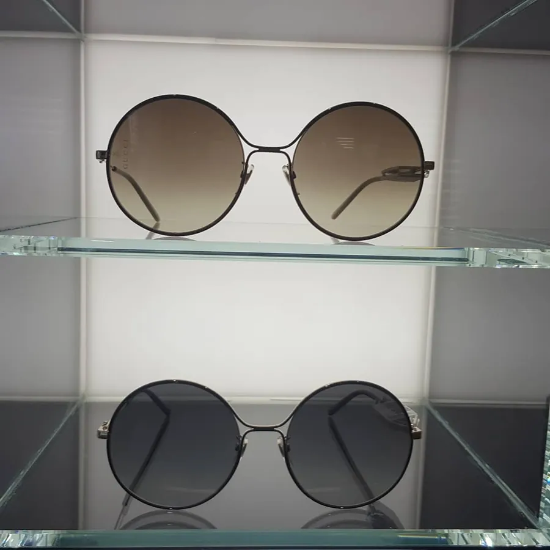
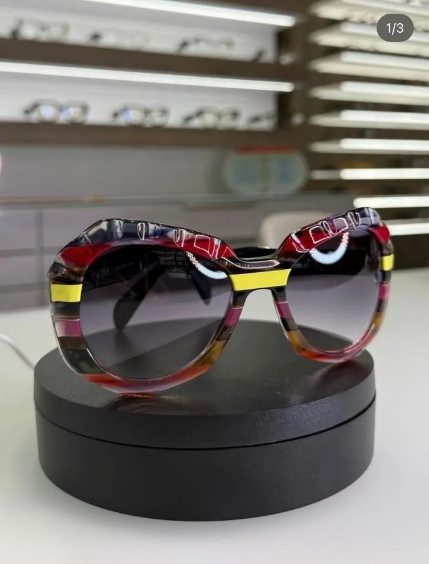
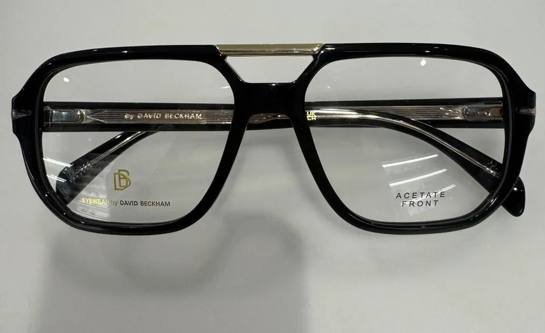
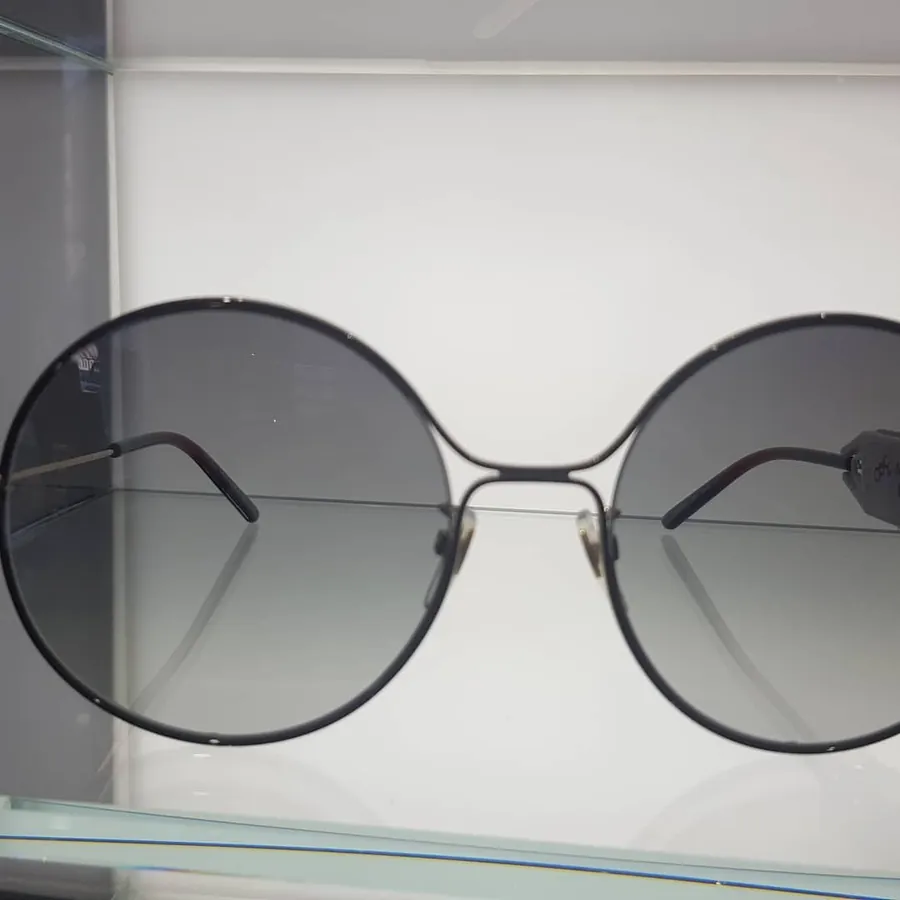
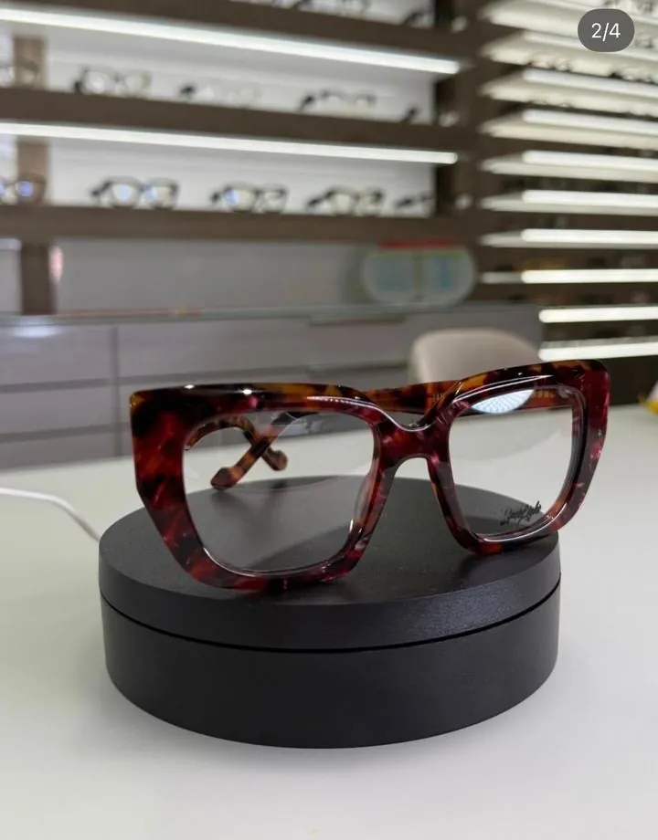
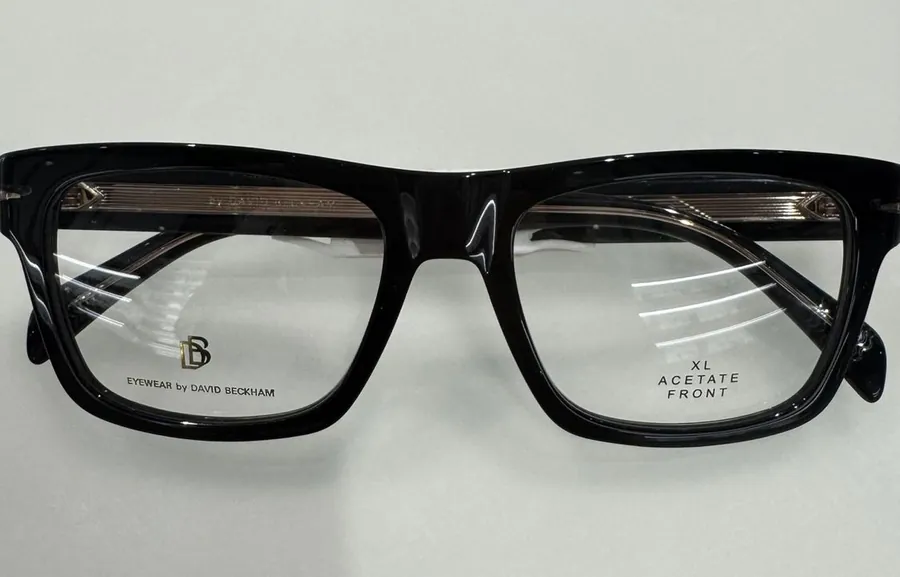

Olivia
Per i nuovi occhiali multifocali ha deciso di cambiare un po' stile, con una montatura più colorata.
Ottici a Torino da trent'anni, in via Fréjus 72 e in corso Dante 76. Controllo della vista gratuito, lenti su misura e montature scelte insieme a voi.
4,8 su 82 recensioni Google Convenzionati ASL e Previmedical

Da quale riga cominciate a strizzare gli occhi? Venite a scoprirlo da noi: il controllo optometrico si fa su appuntamento, nella sede più comoda, senza costi.
Per i bambini c'è anche l'appuntamento gratuito per tenere sotto controllo la miopia che cresce con loro.
Da vista e da sole, colorate o essenziali, tra cui la collezione Eyewear by David Beckham. Si provano con calma, in negozio.








Per i nuovi occhiali multifocali ha deciso di cambiare un po' stile, con una montatura più colorata.
Voleva leggere comodamente anche da sdraiata, senza cercare ogni volta la posizione giusta: abbiamo cercato insieme l'occhiale adatto.
Cliente da tantissimi anni, prima delle vacanze è partito con i suoi nuovi occhiali.
Le loro storie sono sul nostro Instagram @ottica.vasco.
Ottica Vasco è di Sabrina Vasco. Vi seguiamo dal controllo della vista alla scelta di lenti e montature, fino all'assistenza dopo l'acquisto.
Il negozio è gestito da due professioniste straordinarie: simpatiche, premurose e incredibilmente gentili.
Gabriella R., su Google
Non volevo la solita banale e anonima montatura: con pazienza e competenza mi hanno guidato nella scelta.
Stefania F., su Google
Gli ottici di fiducia per tutta la nostra famiglia.
Elda B., su Google
Stessi orari in entrambe: da martedì a sabato 9:30–12:30 e 15:30–19:30.
10139 Torino
10126 Torino
Scriveteci a info@otticavasco.it